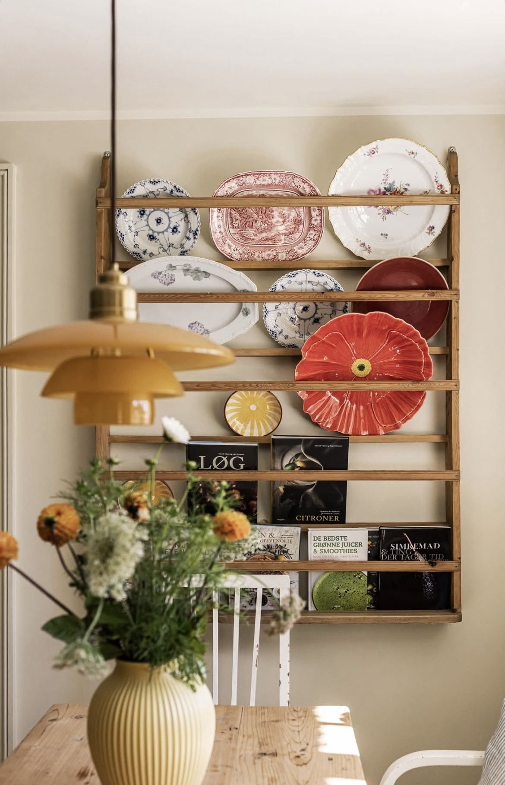
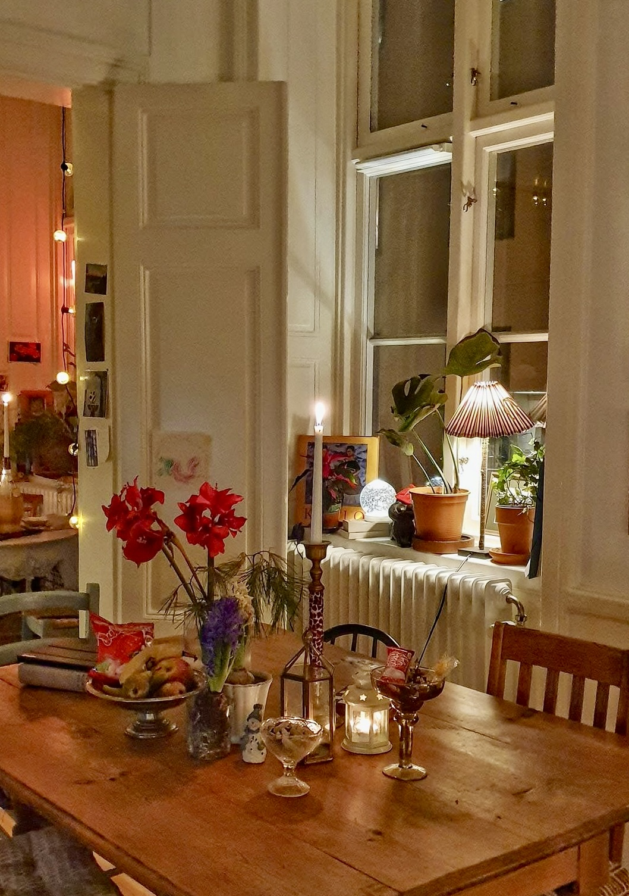
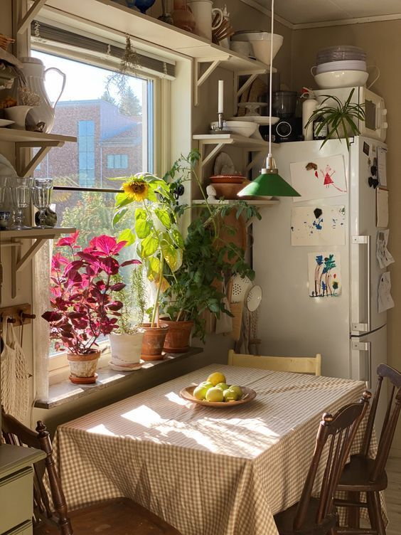
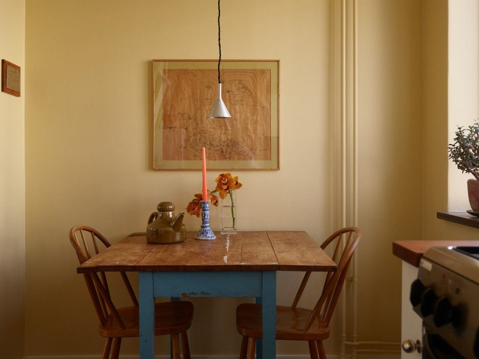
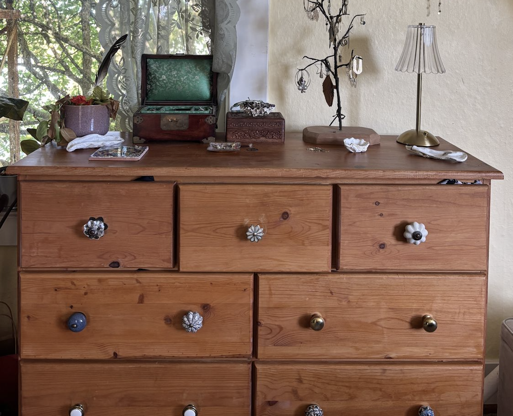
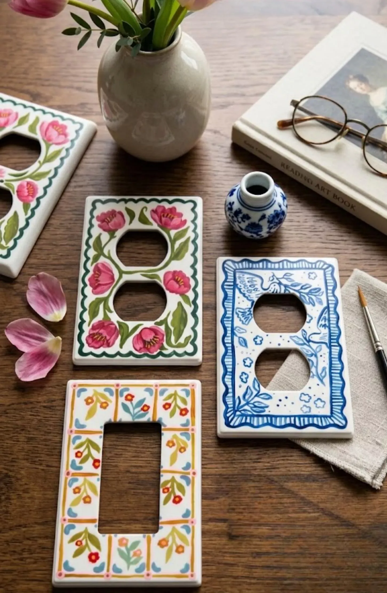
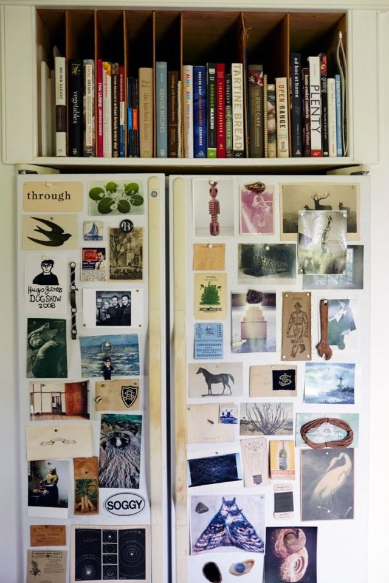
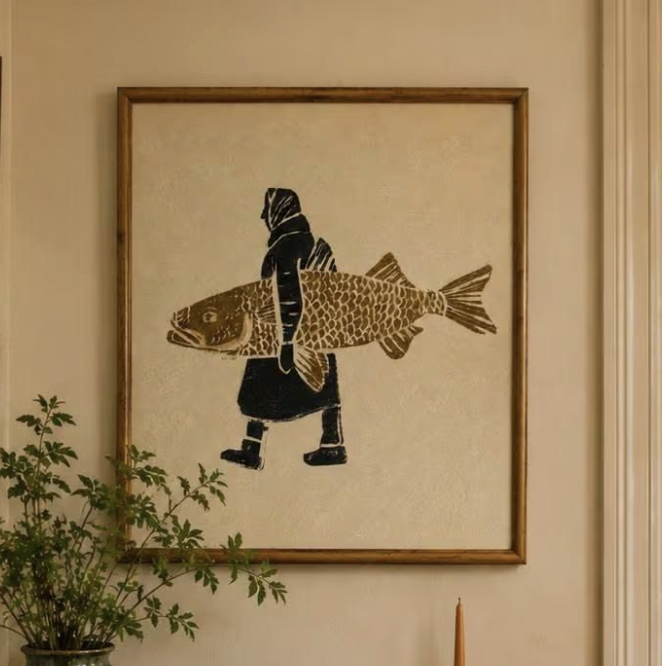
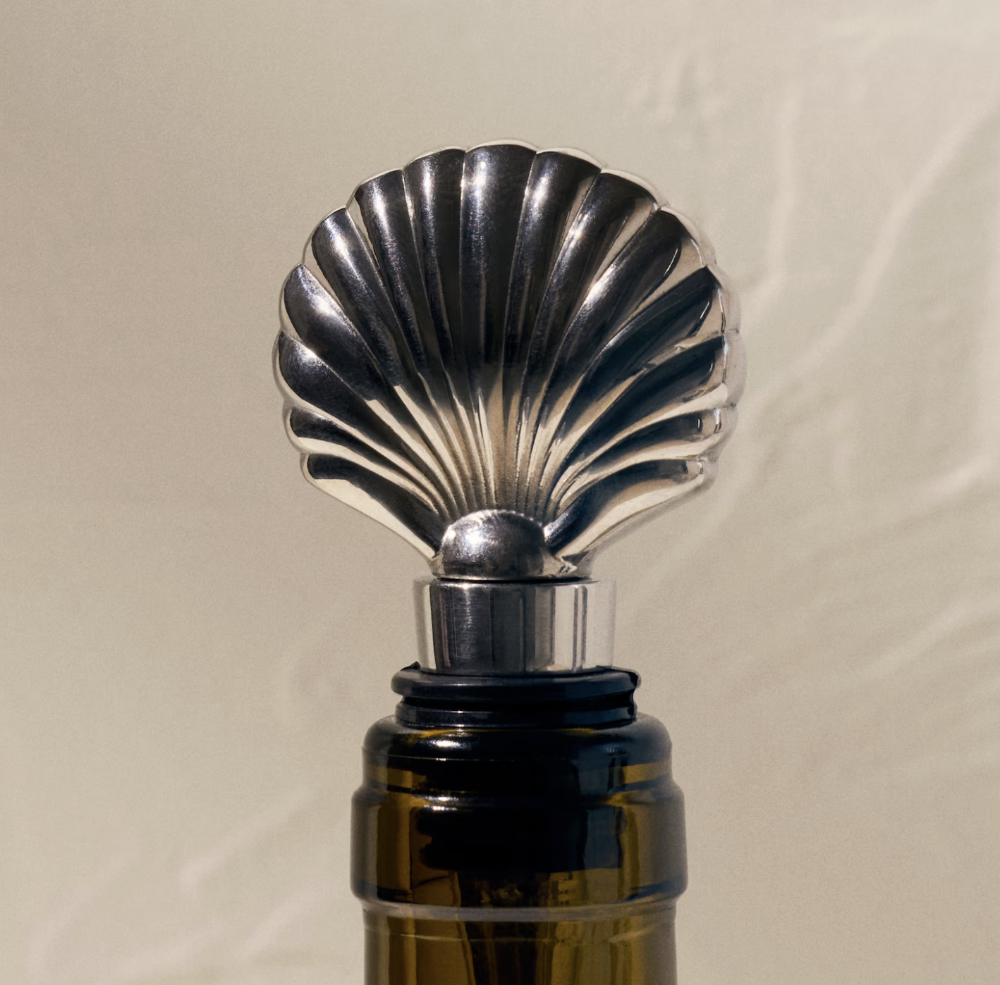

Thrift

Guide 02
Snow white comes home from a long day at the office, kicks off her pumps, and puts on a kettle. It's whimsical, unpretentious, and cozy. It's possible you got most of your furniture from your grandparents.
Scroll for the full plan ↓




small scale lamps with fabric shades
wall mounted wooden shelving
Mix and match chairs around a patinated wood table
tiled kitchen backsplashes
Butter



Notes
Thrift some vintage knobs. Have all the knobs be different. Maybe keep to a certain style like all blue and white or all flower shaped (like the example).

Notes

Notes

